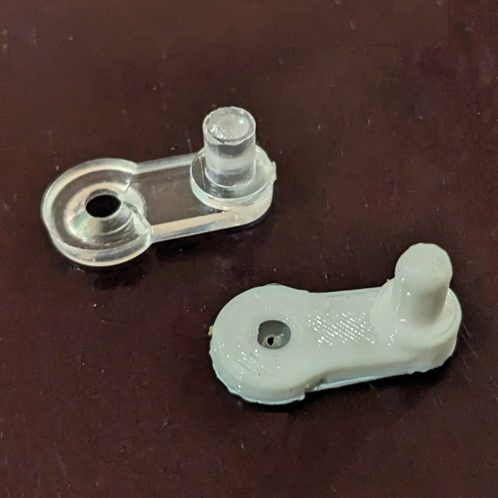

Glass Door Project
In my kitchen, some of the cabinet doors have windows in them. Each of these panes of glass are held in by several rubber pieces that are screwed into the door and press up against the edge of the glass. One of these cabinet doors had a very wobbly window. Upon further inspection, I found that it was being held in by only one of these bits. I decided to remove the pane and the last part holding it in, and took the component with me to school. In my free time, I designed a CAD model for it on TinkerCAD, using my caliper for very percise measurments. When I got home, I used my 3D printer to, essentially, make white clones of the original piece. I installed them and they hold it great!

The one on the top is the previous one, and the lower, white one is one of my printed models.

Here you could see the one old one that remains being helped with the ones of my design.